<style>

</style>


<ARTICLE ID="Article_1">
 <HEADER ID="Header_Article_1">
  <H2>Building Projects</H2>
  
  <SECTION ID="Section_18"> 
<H3>Week 14 </H3>
<H3>Build Log Instructions</H3>

<li> build log instructions are due</li>


 
 <li><a href="/blog/blog.html">build log </a></li>

     

 </SECTION>
  
  
  
   <SECTION ID="Section_17"> 
<H3>Week 13 </H3>

  <p>
 
 <li><a href="/week13.pptx">Indivual Presentation</a></li>
  <p>
     
  </p>
 </SECTION>
  
 <SECTION ID="Section_16"> 
<H2>Week 12</H2>
 
 
 
 <H3> Using A Flex sensor and Servo On The Raspberry Pi Using An MCP3008 </H3>
 <H4> MCP3008 </H4>
 <p>
 In order to measure the X and Y voltages I decided to use an MCP3008 10 bit Analogue to Digital Converter.
 These devices are cheap, easy to setup and allow 8 analogue inputs to be read by the Pi using it’s SPI interface. 
 In this tutorial we will only need three of its inputs.
 
<pre>VDD   3.3V
VREF  3.3V
AGND  GROUND
CLK   GPIO11 (P1-23)
DOUT  GPIO9  (P1-21)
DIN   GPIO10 (P1-19)
CS    GPIO8  (P1-24)
DGND  GROUND</pre>
 
 </p>
 
 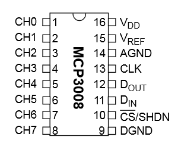
 
 <H4> Breadboard Circuit</H4>
 
 <p>Here is my test circuit </P>
 
 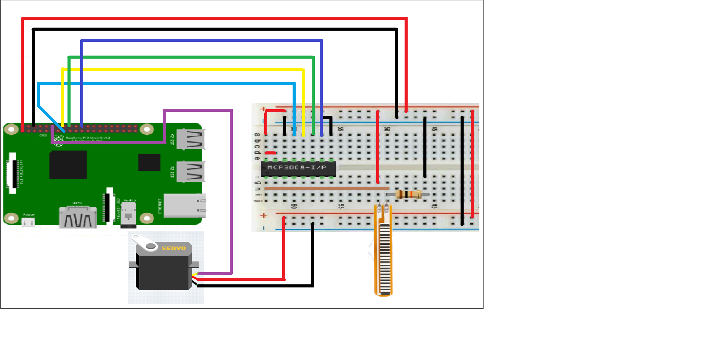
 
 <p> The MCP3008 is wired up just as it was in my previous post :</p>
 
 
 <pre>MCP3008 &nbsp; &nbsp; &nbsp; &nbsp; &nbsp; Pi &nbsp; &nbsp; &nbsp; &nbsp; &nbsp; &nbsp; &nbsp; &nbsp;      
--------------    ----------------        
Pin 1  (CH0)      -                      
Pin 2  (CH1)      -                       
Pin 3  (CH2)      -                       
Pin 9  (DGND)     Pin 6  (Ground)         
Pin 10 (CS)       Pin 24 (GPIO8)          
Pin 11 (DIN)      Pin 19 (GPIO10)         
Pin 12 (DOUT)     Pin 21 (GPIO9)          
Pin 13 (CLK)      Pin 23 (GPIO11)         
Pin 14 (AGND)     Pin 6  (Ground)                
Pin 15 (VREF)     Pin 1  (3.3V)           
Pin 16 (VDD)      Pin 1  (3.3V)           </pre>


<H4>Python Test Script</H4>

<div style="background-color:#E3E3E3;color:black;padding:20px;">
 
<p> #!/usr/bin/env python</p>

import time</p>
import RPi.GPIO as GPIO</p>

GPIO.setmode(GPIO.BCM)</p>
GPIO.setwarnings(False)</p>

# read SPI data from MCP3008 chip, 8 possible adc's (0 thru 7)</p>
def readadc(adcnum, clockpin, mosipin, misopin, cspin):</p>
    if ((adcnum > 7) or (adcnum < 0)):</p>
        return -1</p>
    GPIO.output(cspin, True)</p>

    GPIO.output(clockpin, False)  # start clock low</p>
    GPIO.output(cspin, False)     # bring CS low</p>

    commandout = adcnum</p>
    commandout |= 0x18  # start bit + single-ended bit</p>
    commandout <<= 3    # we only need to send 5 bits here</p>
    for i in range(5):</p>
        if (commandout & 0x80):</p>
            GPIO.output(mosipin, True)</p>
        else:</p>
            GPIO.output(mosipin, False)</p>
        commandout <<= 1</p>
        GPIO.output(clockpin, True)</p>
        GPIO.output(clockpin, False)</p>

    adcout = 0</p>
    # read in one empty bit, one null bit and 10 ADC bits</p>
    for i in range(12):</p>
        GPIO.output(clockpin, True)</p>
        GPIO.output(clockpin, False)</p>
        adcout <<= 1</p>
        if (GPIO.input(misopin)):</p>
            adcout |= 0x1</p>

    GPIO.output(cspin, True)</p>

    adcout >>= 1       # first bit is 'null' so drop it</p>
    return adcout</p>

PWMOUT = 18</p>
SPICLK = 22</p>
SPIMISO = 23</p>
SPIMOSI = 24</p>
SPICS = 25</p>

# set up the interface pins</p>
GPIO.setup(PWMOUT, GPIO.OUT)</p>
GPIO.setup(SPIMOSI, GPIO.OUT)</p>
GPIO.setup(SPIMISO, GPIO.IN)</p>
GPIO.setup(SPICLK, GPIO.OUT)</p>
GPIO.setup(SPICS, GPIO.OUT)</p>

# 10k trim pot connected to adc #0</p>
potentiometer_adc =0;
pwm_freq = 50       # Set the PWM frequency to 50 Hz</p>
last_read = 0       # this keeps track of the last potentiometer value</p>
tolerance = 0       # to keep from being jittery we'll only change</p>
                    # volume when the pot has moved more than 5 'counts'</p>

# Configure the PWM pin</p>
p = GPIO.PWM(PWMOUT, pwm_freq)  # channel=18 frequency=50Hz</p>
p.start(9)</p>

try:</p>
  while True:</p>
    # we'll assume that the pot didn't move</p>
    trim_pot_changed = False</p>

    # read the analog pin</p>
    trim_pot = readadc(potentiometer_adc, SPICLK, SPIMOSI, SPIMISO, SPICS)</p>
    # how much has it changed since the last read?</p>
    pot_adjust = abs(trim_pot - last_read)</p>

    if ( pot_adjust > tolerance ):</p>
        trim_pot_changed = True</p>
        last_read = trim_pot</p>

    if ( trim_pot_changed ):</p>
        pwm_pct = round((trim_pot) / 2) # Determine current voltage percentage</p>
        pwm_pct = int(pwm_pct)            # Cast the value as an integer</p>
        DC= 1./18*(pwm_pct)</p>
        print "ADC read: ", trim_pot</p>
        print "PWM percentage: ", pwm_pct</p>
        print "PWM Duty Cycle: ", DC </p>
        
        p.ChangeDutyCycle(DC)</p>

    # hang out and do nothing for a half second</p>
    time.sleep(0.5)</p>
except KeyboardInterrupt:</p>
    pass</p>

p.stop()</p>
GPIO.cleanup()</p>
 
</div> 


<h4>You can download this script directly to your Pi using :</h4>
<div style="background-color:#E3E3E3;color:black;padding:20px;">

wget https://github.com/LadZone/LadZone.github.io/blob/master/tune_led.py

</div>


<h4>This can then be run using  :</h4>
<div style="background-color:#E3E3E3;color:black;padding:20px;">
sudo python tune_led.py
</div>


<p>If everything has worked correctly you should see an output that looks something like :</P>

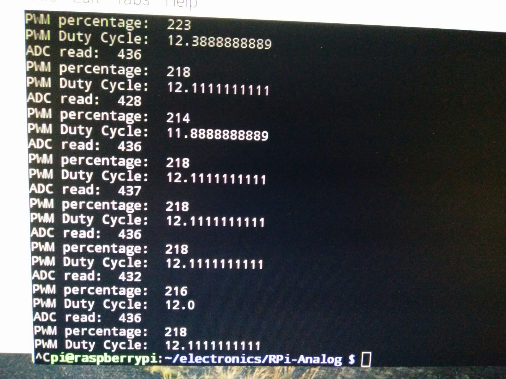
 

  
 </SECTION>
 </HEADER>
 
 
 
 
 <SECTION ID="Section_14"> 
<H3>Week 10</H3>
  <p>
 Questions that have been ask in open house
 <li><a>How long its take to make?</a></li>
 <li><a>How can we make it easy to control it?</a></li>
 
  <p>
     
  </p>
 </SECTION>
 
 
 
 
  <SECTION ID="Section_13"> 
<H3>Week 9</H3>
  <p>
 <video width="320" height="240">
  <source src="FIMP.mp4" type="video/mp4"> 
</video>
  <p>
     
  </p>
 </SECTION>
 
 
  <SECTION ID="Section_12"> 
<H3>Week 8</H3>
  <p>
 Placard:
  <p>
   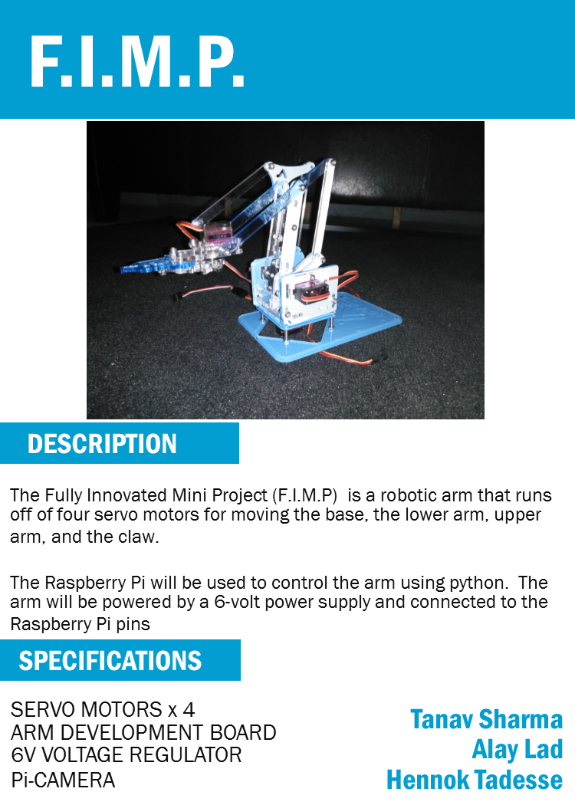
   <h4>Links:</h4>
	<p>
	  <ul>
	  <li><a href="/F.I.M.P Plac Card.pub">PlacCard</a></li>	  
  </p>
 </SECTION>
   
 <SECTION ID="Section_11">
  <H3>Week 7</H3>
  
  <li>power-up milestone which will be peer graded</li>
  <li></li>  
  
  </SECTION>
  
  
  <SECTION ID="Section_10">
  <H3>Week 6</H3>
  <p>
   <ul>
	<li>I havent have had to buy any extra components or parts, however, I will if it helps me reach my goals quicker and in much more efficient manner.</li>
	
	<H4>Links:</h4>
	<p>
	  <ul>
		<li><a href="/docs/FIMP.mpp">Project Schedule</a> (This will dowload a Microsoft Project File)</li>
		<li><a href="/docs/AlayProposalHardware.docx">Project Proposal</a></li>
		<li><a href="/docs/AlayProjectBudget.docx">Project Budget</a></li>
		<li><a href="Sketchs.html">Sketches</a>
		
		<li>Start working on cam </li>
		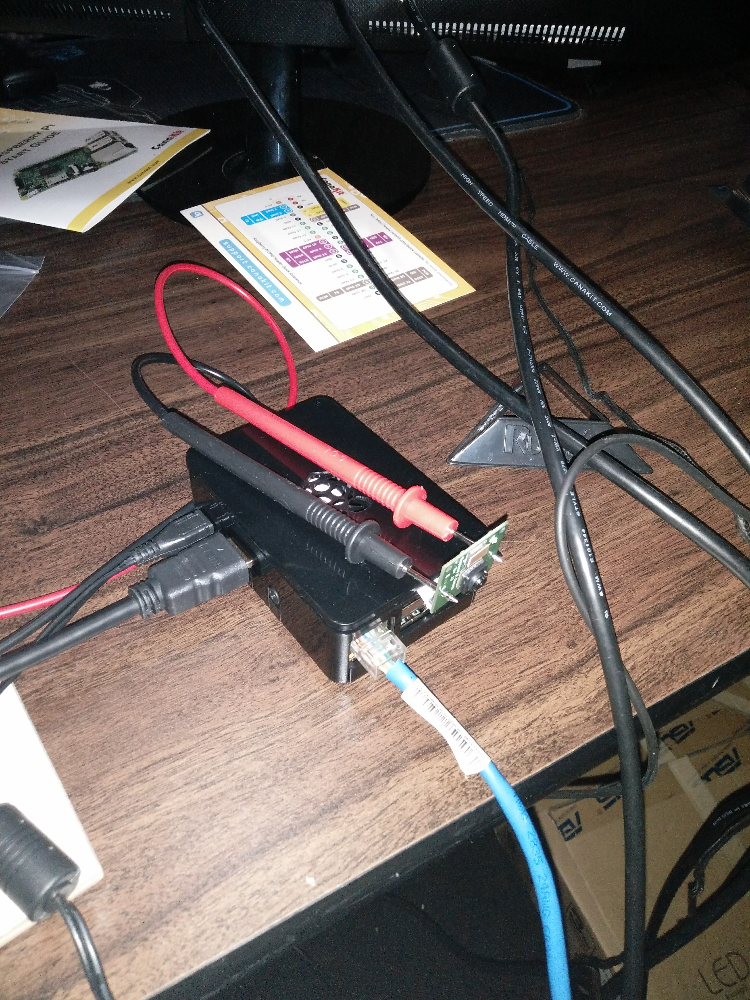
		
		</SECTION>
 
   <SECTION ID="Section_9">
  <H3>Week 5</H3>
  <p>
   <ul>
    <li>2 out of 3 of my parts have arrived in the mail. I am currently working on making unboxing videos and assembly videos.</li>
	<li>I should have my videos edited and posted by late next week, so stay tuned.</li>
	<li>I will also be completing my PCB by the late next week as well.</li>
	
	<li>Done Arm and ready to program</li>
		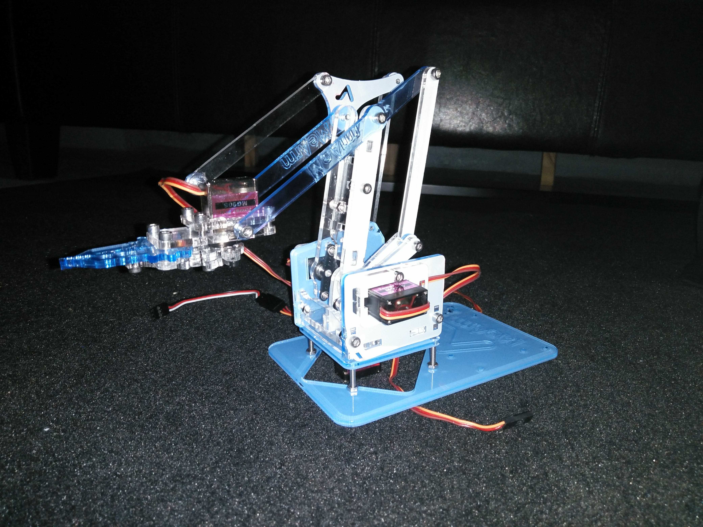
		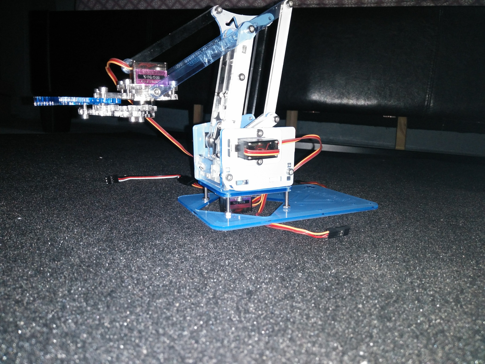
 </SECTION>

 
   <SECTION ID="Section_8">
  <H3>Week 4</H3>
  <p>
   <ul>
    <li>This week I ordered all my parts. I ordered my Rasberry Pi, and my Robot Arm.</li>
	<li>I started working on soldering my PCB.</li>
	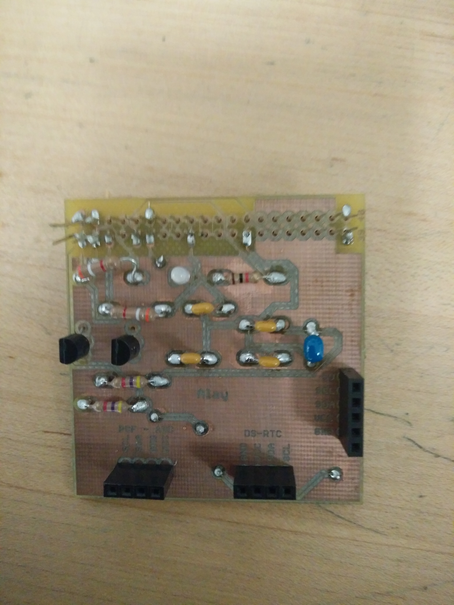
	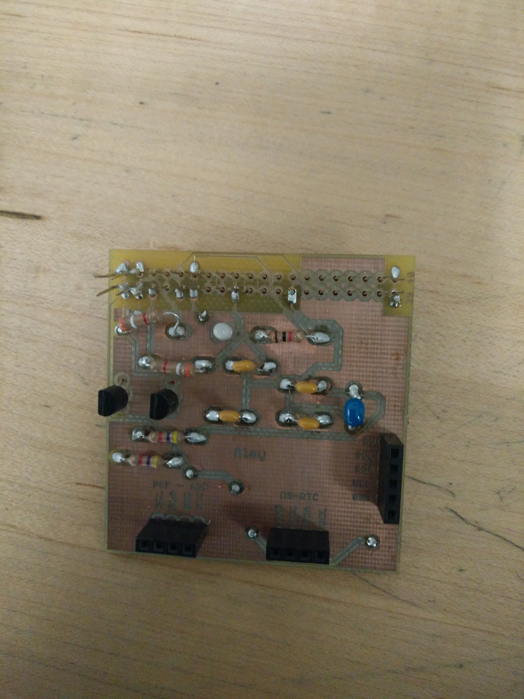
	
	<li>Start building Arm</li>
	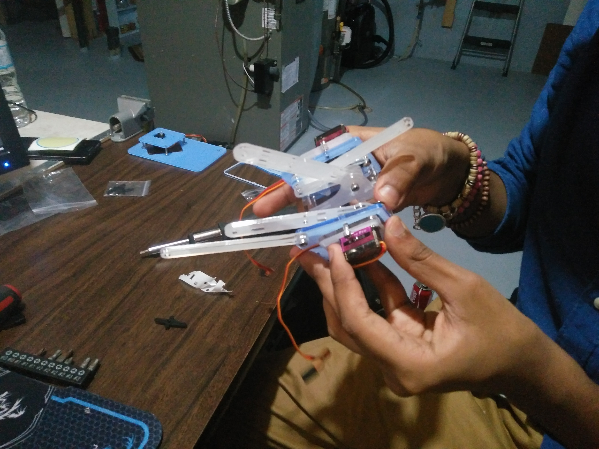
	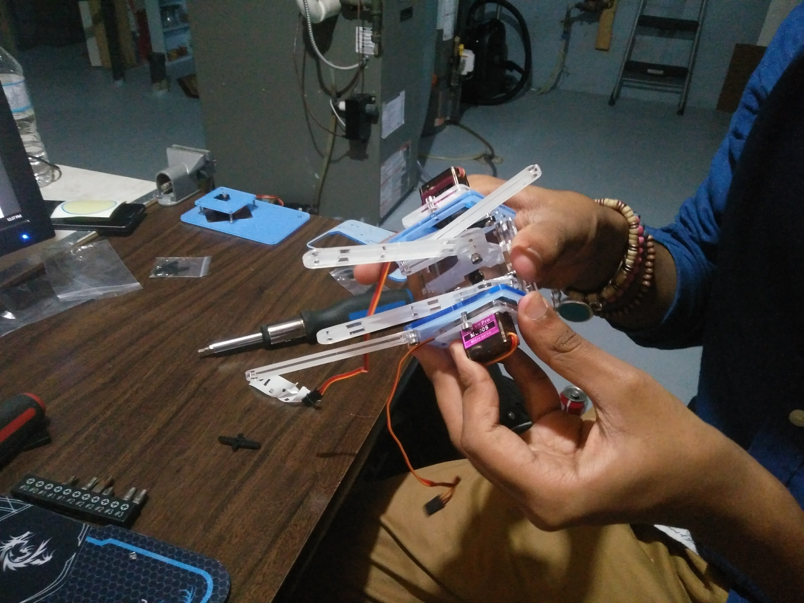
	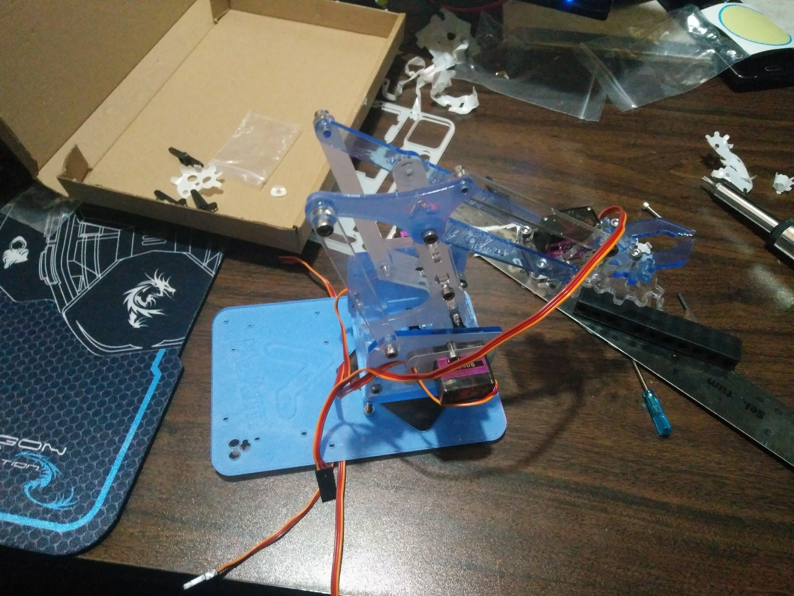
	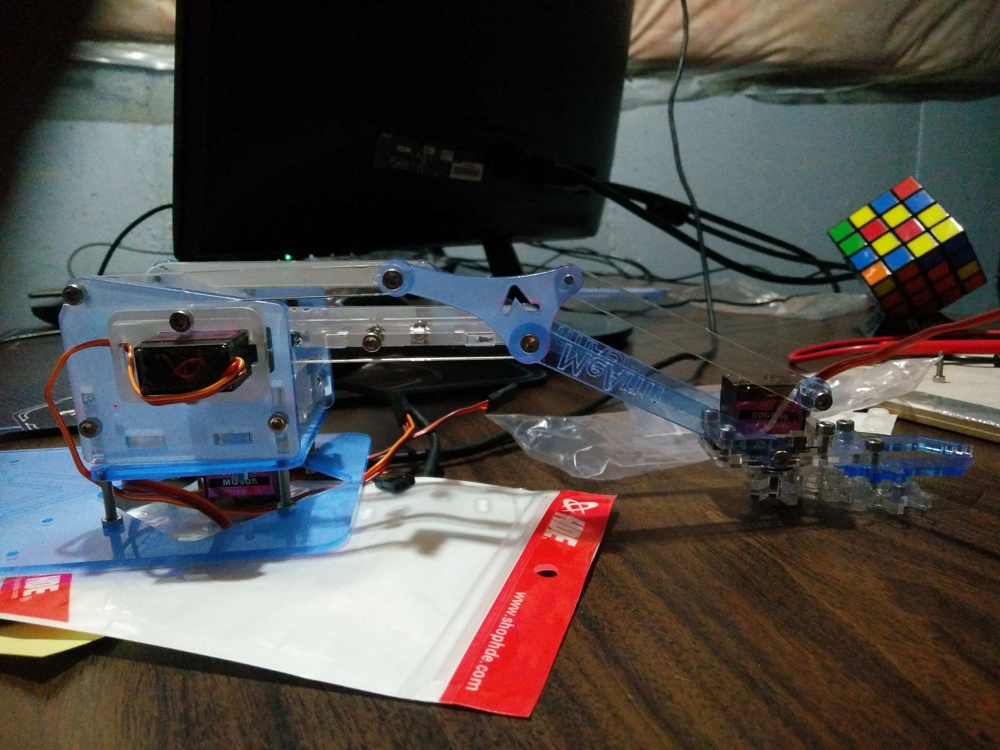
	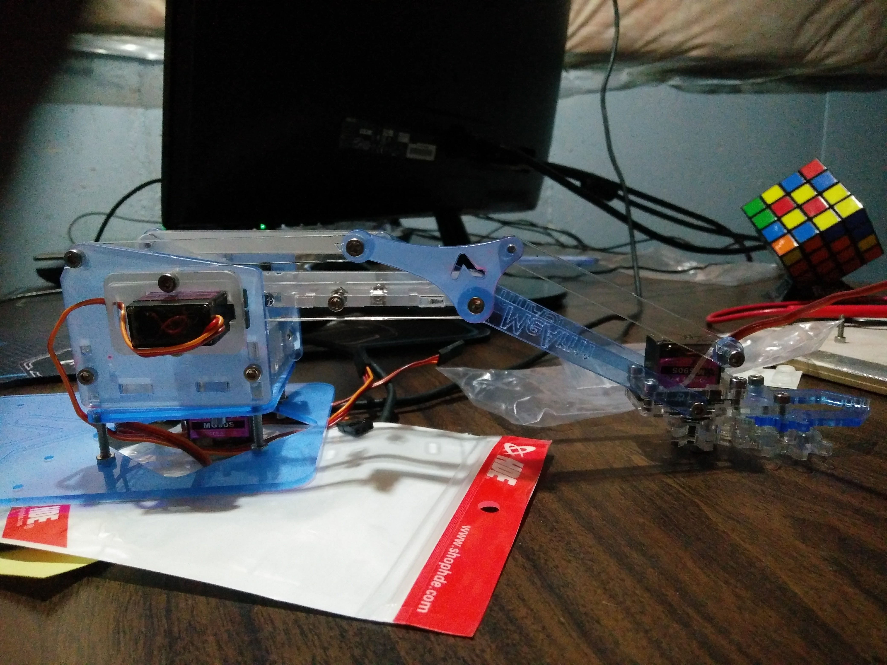
 </SECTION>

 
  <SECTION ID="Section_7">
 <H3>Week 3</H3>
  <p>
   <ul>
    <li>This week I completed My Project Schedule. I also continued to practise, soldering </li>
	<li>I started working on my budget, and looking at options online to find suitable price/parts to fit my budget.</li>
  
 </SECTION>
 
 
 
 
 
  <SECTION ID="Section_6">
  <H3>Week 2</H3>
  <p>
   <ul>
    <li> This week I watched some soldering videos online, and practised on a practise board.</li>
	<li> I decided on what hardware I will be building and prepared my propsal. </li>
	<li> I created my circut for my PCB</li>
	
  
 </SECTION> 
 
 <SECTION ID="Section_1">
  <H3>Week 1</H3>
  <p>
   <ul>
    <li>  </li>
  
 <SECTION ID="Section_5">
  <H3>Past Projects</H3>
  <p><ul>
    <li><a href="http://munro.humber.ca/~mdrk0011/projects/">http://munro.humber.ca/~mdrk0011/projects/</a></li>
  </ul></p>
 </SECTION>

</ARTICLE>